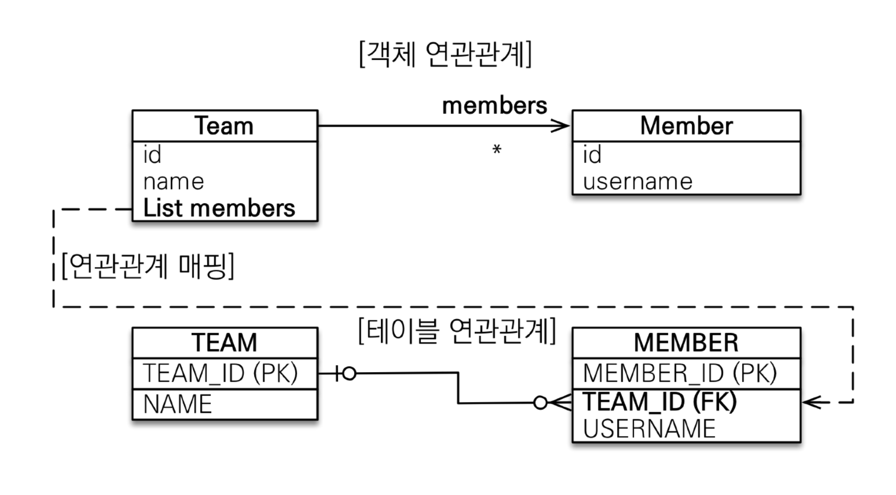
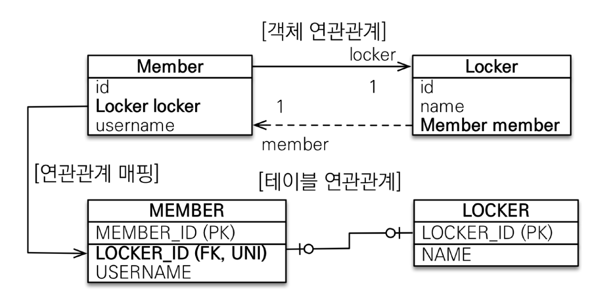
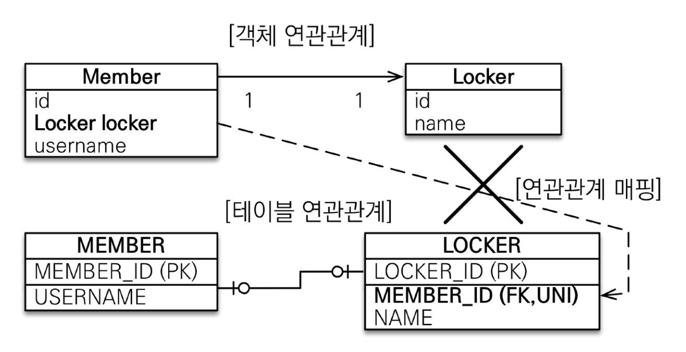
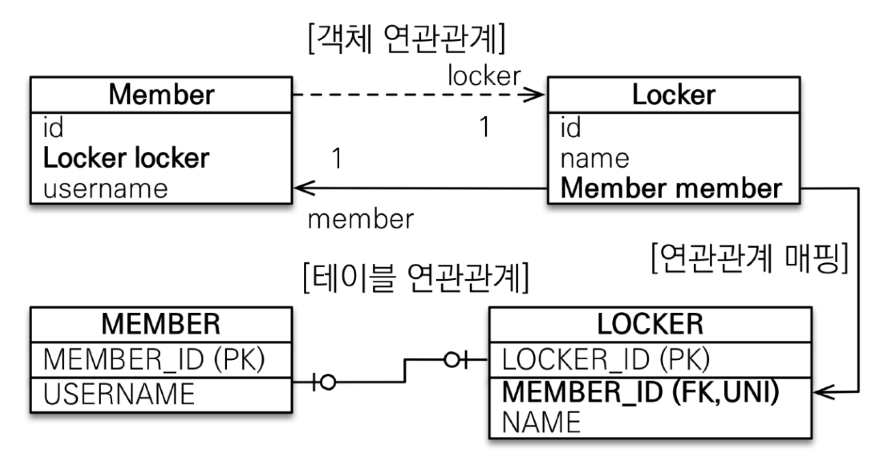
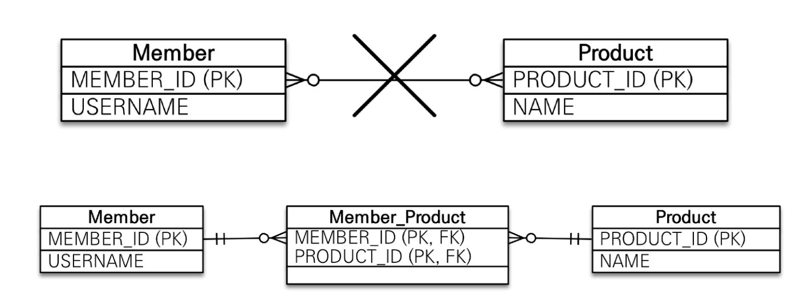
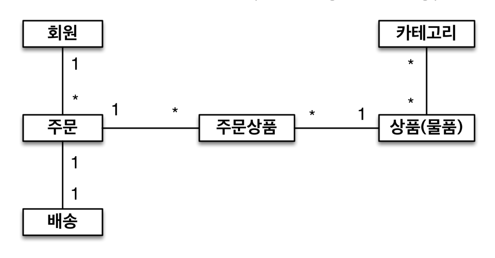

다중성
@ManyToOne / @OneToMany / @OneToOne / @ManyToMany@ManyToMany는 거의 쓰이지 않음
단방향, 양방향
| 테이블 | 객체 |
|---|---|
| 외래 키 하나로 양쪽 join | 참조용 필드가 있는 쪽으로만 참조 |
| 방향 개념 없음 | 한쪽만 참조하면 단방향, 서로 참조하면 양방향 |

List<Member> 추가
DB에서는 무조건 Many 쪽(MEMBER)에 외래 키가 있음
Team(One 쪽)에 연관관계의 주인이 설정될 경우
Team team = new Team();
team.getMembers().add(member);
em.persist(team);
객체와 테이블의 차이 때문에 반대편 테이블의 외래 키를 관리하는 특이한 구조
@JoinColumn을 반드시 사용해야 함
권장되지는 않음

@JoinColumn(insertable = false, updatable = false)



주 테이블에 외래 키
대상 테이블에 외래 키


@ManyToMany 사용@JoinTable로 연결 테이블 지정// class Category(주 테이블)
@ManyToMany
@JoinTable(name = "category_item",
joinColumns = @JoinColumn(name = "category_id"),
inverseJoinColumns = @JoinColumn(name = "item_id"))
private List<Category> items;
// class Item(대상 테이블)
@ManyToMany(mappedBy = "items")
List<Category> categories = new ArrayList<>();

@ManyToMany -> @OneToMany, @ManyToOne

@JoinColumn외래 키를 매핑할 때 사용
| 속성 | 설명 | 기본값 |
|---|---|---|
| name | 매핑할 외래 키 이름 | 필드명_참조하는 테이블의 기본 키 컬럼명 |
| referencedColumnName | 외래 키가 참조하는 대상 테이블의 컬럼명 | 참조하는 테이블의 기본 키 컬럼명 |
| foreignKey(DDL) | 외래 키 제약조건을 직접 지정 테이블 생성 시에만 사용 |
|
| unique(DDL) | 컬럼에 유니크 제약조건을 지정 | false |
| nullable(DDL) | false로 설정 시 컬럼에 NOT NULL 제약조건을 지정 | true |
| insertable | 읽기 전용에서 사용 false 설정 시 이 필드를 DB에 저장하지 않음 |
true |
| updatable | 읽기 전용에서 사용 false 설정 시 이 필드를 DB에서 수정하지 않음 |
true |
| columnDefinition(DDL) | 데이터베이스 컬럼 정보를 직접 지정 | 자바 필드 타입, dialect 정보를 참고해 생성 |
| table | 링크 참고 | 현재 클래스가 매핑된 테이블 |
@ManyToOne| 속성 | 설명 | 기본값 |
|---|---|---|
| optional | false 설정 시 연관된 엔티티가 항상 있어야 함 | true |
| fetch | 글로벌 페치 전략을 설정 | @ManyToOne = FetchType.EAGER@OneToMany = FetchType.LAZY |
| cascade | 영속성 전이 기능을 사용 | |
| targetEntity | 연관된 엔티티의 타입 정보를 설정 거의 사용하지 않음 |
@OneToMany| 속성 | 설명 | 기본값 |
|---|---|---|
| mappedBy | 연관관계의 주인인 필드를 지정 | |
| fetch | 글로벌 페치 전략을 설정 | @ManyToOne = FetchType.EAGER@OneToMany = FetchType.LAZY |
| cascade | 영속성 전이 기능을 사용 | |
| targetEntity | 연관된 엔티티의 타입 정보를 설정 거의 사용하지 않음 |